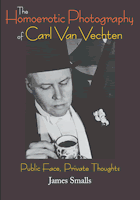

The private, interracial, homoerotic photographs of one of the best-known gay, white promoters of the Harlem Renaissance
The private, interracial, homoerotic photographs of one of the best-known gay, white promoters of the Harlem Renaissance


 The private, interracial, homoerotic photographs of one of the best-known gay, white promoters of the Harlem Renaissance
The private, interracial, homoerotic photographs of one of the best-known gay, white promoters of the Harlem Renaissance

|  |
The Homoerotic Photography of Carl Van VechtenPublic Face, Private ThoughtsJames Smallscloth EAN: 978-1-59213-305-5 (ISBN: 1-59213-305-3) |
"James Smalls offers an original, provocative, thoughtful and necessary analysis of interracial homoerotic fetish and fantasy. His writing is well balanced and his argument considers how the images operate psychologically and socially during the historical moment of the Harlem Renaissance and during the present day. The book is an invaluable text in black studies, queer studies and the Harlem Renaissance."
—Mark A. Reid, author of Black Lenses, Black Voices: African American Film Now
Carl Van Vechten (1880-1964) was perhaps the most notorious white patron of the arts of black America, particularly during the Harlem Renaissance. In 1932, he gave up a career as a theater critic and a novelist of light fiction to become a full-time amateur photographer. His photographs of the era's celebrated African American cultural figures are well-known, but until recently his private, homoerotic interracial photographs were sealed in an archive.
Author James Smalls considers how these images relate to Van Vechten's public persona and private desires. He discusses the interracial photographs in the context of white privilege and exotic tourism, primitivism's relation to modernism, camp sensibility and theatricality, and the vibrancy of underground gay visual culture during periods of political oppression. He also considers contemporary viewers' conflicting responses to the eroticized black male body in Van Vechten's and later twentieth-century photography. This original and provocative book embraces transracial voyeuristic pleasure while acknowledging the negative political implications of that pleasure.
Amply illustrated with 60 pioneering duotones, The Homoerotic Photography of Carl Van Vechten celebrates the sensual nude male form with both candor and reverence, offering a rare glimpse into the private domain of the master photographer and his subjects.
Excerpt available at www.temple.edu/tempress
"This book is a fantastic re-examination of a queer archive, which re-positions Vechten's life and his unpublished photographic work on representation of the Harlem Renaissance inter-racial queer period. A must for any readers interested in the complexities of how the images and personas of the Harlem Renaissance were created. To understand this unique history and its inner 'queer' workings you have to read this revealing new study of one of the most important publicists of the Harlem Renaissance movement."
—Isaac Julien, director of Looking for Langston
"A definitive text that will become an important reference in the fields of art history, visual culture, photography history, black studies, Harlem Renaissance studies, and studies in race, gender, sexuality and representation. Smalls has succeeded in anchoring Van Vechten's private photographs of interracial nudes at the center of crucial historical debates about primitivism's relation to modernism, white noblesse oblige and exotic tourism. I don't believe Smalls has left any important stones unturned in this study; his text is chock full of information and makes rich interconnections among its components."
—Deborah Bright, Rhode Island School of Design
"James Smalls places Carl Van Vechten's homoerotic photographs in the immutable space between beauty and desire. Offering a compelling collection of moments—from the discovery of the images to the contemporary reading of them—this delicate balance of radical writing focuses on Carl Van Vechten's contradictory and confusing relationships. Smalls offers a much more nuanced discussion of Carl Van Vechten's interest in racialized bodies. The author reveals that he is both intrigued by and attracted to Van Vechten's desire for the closed-door viewing of these forbidden alliances. Yet he still is able to suggest a new way of reading homoerotic images—by looking closely at the constructed images, the cultural and historical implications of stereotyping the male body, and Van Vechten's notions about 'Africa' and the black male body. Smalls' book pushes the boundaries."
—Deborah Willis, New York University, and co-author of The Black Female Body
"Drawing on a wide range of primary and critical sources, [Smalls] not only uncovers a vital link in American cultural history but makes an important contribution to understanding contemporary culture."
—Publishers Weekly, starred review
"The Homoerotic Photography of Carl Van Vechten contains 60 photographs along with a learned but highly accessible discussion of the photographer and his place as an artist and as a gay man. Scholarship has rarely been this stimulating."
—Out Magazine
"[Smalls'] sexuality, his race, and his training are all filters for his astute assessment of the 34 homoerotic photos—many of them of black men, and just as many interracial—collected here.... [His] honest tension informs, animates, and illuminates this landmark academic study..."
—Richard Labonte, Q Syndicate
"Smalls goes to great lengths to ensure that Van Vechten's photos are viewed as artifacts of their time—the 1930s and 1940s—and photographed by someone intimately familiar with the art movements of primitivism and modernism. Smalls analyzes some of the images with amazing (and occasionally mind-numbing) detail."
—The Dallas Voice
"Thanks to [Small’s] research, The Homoerotic Photography of Carl Van Vechten puts the homoerotic work in context with the artist’s career and private life. The book looks at current opinions on the eroticized black male body, and it does a good job of spanning many of Van Vechten’s twentieth century American contemporaries."
—Mandate
"[The book] confirms the erotic curiosity inherent in Van Vechten’s Harlem sponsorship and the voyeurism - obverse to the spectatorship of his criticism - that informed so much of his life."
—Bookforum
"[T]horoughly researched...[it] provid[es] a useful addition to libraries focused on gender and/or black studies."
—Choice
"Smalls shines a new light onto an understudied portion of Van Vechten’s impressive cache of male nude photographs sealed in boxes at Yale’s Bienecke Library for twenty-five years after his death. Taken in the 1930s and 1940s often pairing one black and one white model, they are expertly analysed [sic] in all their transgressive as well as racist potential…With deft turns of phrase and analytical prowess, Smalls hold onto seemingly binary, contradictory points of view….[W]ith perceptive comparisons to the work of more recent black photographers such as Rotimi Fani-Kayode and Ajamu Ikwe Tyekimba, Smalls tracks compelling trajectories in twentieth-century, interracial, homoerotic photography. His important book will surely inform much new work in the field."
—American Studies
Acknowledgments
Introduction
1. Days in the Darkroom: Developing a Love Affair with Photography
2. Van Vechten and the Awakening of Black and Gay Harlem
3. Lure of the Primitive and Loss of Self
4. Parallel Desires/Divergent Means
5. Van Vechten's Interracial "Pas de Deux"
6. Inside Van Vechten's Camp
7. The Scrapbooks
8. New Racial and Interracial Strategies in a Post-Van Vechten World
9. Forever the "Intrepid Abolitionist"
Notes
Bibliography
Index
Photographs follow page 104
 | James Smalls is Associate Professor of Art History and Theory at the University of Maryland, Baltimore County. He is the author of Homosexuality in Art. |
Art and Photography
Sexuality Studies/Sexual Identity
African American Studies
© 2015 Temple University. All Rights Reserved. This page: http://www.temple.edu/tempress/titles/1696_reg.html.